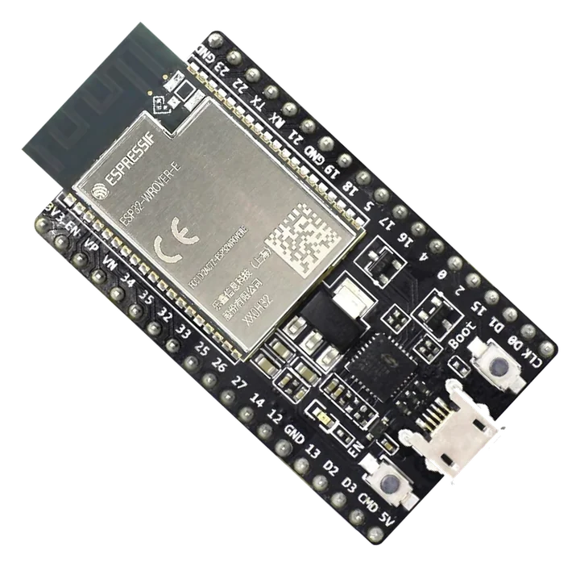
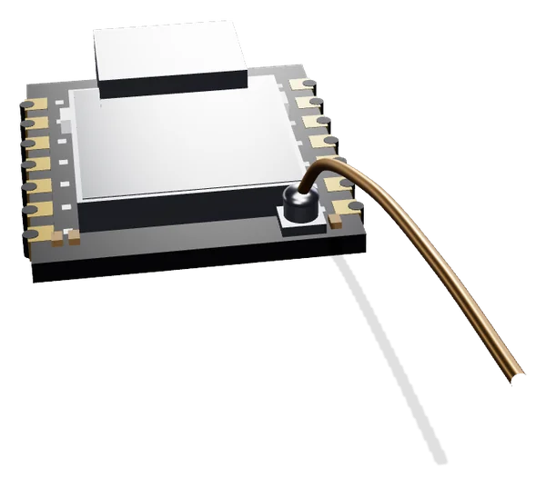
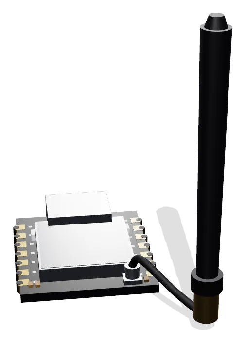
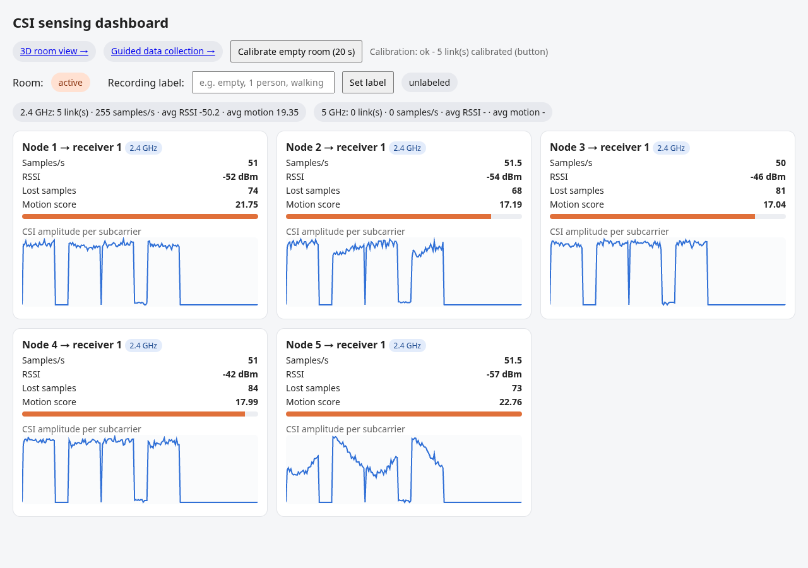
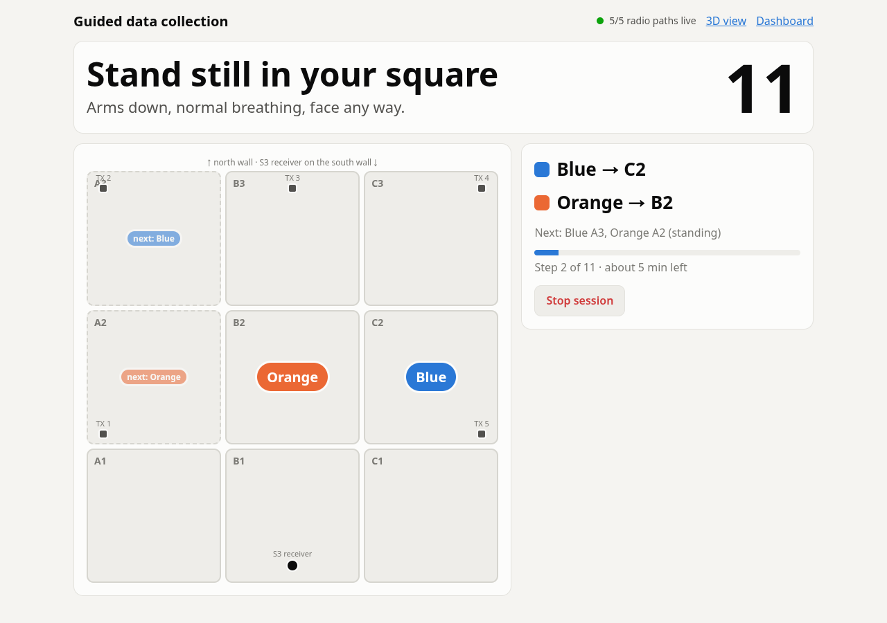
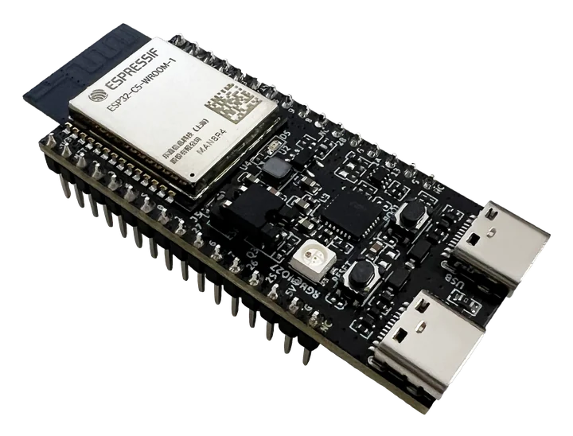

Overview
Verizon Built for Verizon's Smart Campus competition (Round 1) as Team Mech Tech.
Clairvoyance finds people in a room using nothing but Wi-Fi: no cameras, no microphones, nothing worn.
Small ESP32 transmitters around the room send tiny ESP-NOW packets 50 times a second to a CSI receiver. A person's body blocks and reflects those radio signals, and the receiver's Wi-Fi chip measures the change as Channel State Information (CSI). A Raspberry Pi 5 compares every radio path with the empty room, works out which paths a person is disturbing, and shows each person live in a 3D model of the room.
Results from our testing with 6 transmitters on 2.4 GHz. More transmitters mean more radio paths across the room and higher accuracy (the system supports up to 10).
What We Used
Four ESP32 dev modules and two Seeed Studio XIAO ESP32-S3 boards with wire antennas.


A XIAO ESP32-S3 with a dipole antenna, sensing on 2.4 GHz.

A Raspberry Pi 5 (8 GB) hosted the AI model, the signal processing, and the 3D view.
An industrial-grade enterprise access point hosted the Wi-Fi network on channel 11.
ESP32 and ESP32-C5 board images: Espressif esp-dev-kits docs (CC BY-SA 4.0; background removed). XIAO ESP32-S3 images are simplified 3D renders made for this page.
A Deeper Look: How We Built Clairvoyance
From picking the boards to processing the radio signals and training the model.
Choosing the Right ESP32
My part of the project was the ESP32 side: picking the boards and antennas, getting the transmitters talking over ESP-NOW, and making sure CSI sensing worked on the receiver before the data reached the Pi. These recommendations come from our own testing and from Espressif's guidance for CSI applications.
Which board we recommend for CSI sensing
- ESP32-C5Best. Wi-Fi 6 on both 2.4 GHz and 5 GHz, so it can sense on the quieter 5 GHz band.
- ESP32-C6Best 2.4 GHz choice. Wi-Fi 6, but 2.4 GHz only.
- ESP32-S3 ≈ ESP32-C3About equal on CSI. We used an S3 receiver because the XIAO ESP32-S3 has an antenna connector for a dipole.
- ESP32Oldest and weakest at CSI, but a reliable transmitter.
Ranking from Espressif's ESP-CSI solution guide: ESP32-C5 > ESP32-C6 > ESP32-C3 ≈ ESP32-S3 > ESP32.
Transmitters vs. receivers
Only broadcast small ESP-NOW packets, so almost any ESP32 works. What matters most is a stable connection and a decent antenna, so every packet arrives on time.
Do the actual CSI sensing on every packet, so this is where the board ranking above matters. Use the best chip you can, with a dipole antenna.
Antenna types
Built into the board. Small and cheap, but the weakest of the three, and easily detuned by nearby wires, metal, or hands.
A roughly 31 mm wire soldered to the antenna feed. Cheap and a big step up from a tiny onboard antenna. Good for transmitters.
An external rod antenna on an antenna connector. Highest gain, even coverage all around, and least affected by interference. Best for CSI receivers.
These tiny boards squeeze a small ceramic antenna in right next to the crystal, the pin headers, and the power circuitry, with almost no clear space around it. In practice that means:
- Weak, unreliable Wi-Fi: they drop the connection or fail to connect, especially at full transmit power.
- Interference: nearby wires, headers, and power traces detune the antenna.
- Unstable power: the small regulator struggles with Wi-Fi's current spikes, which can cause disconnects and resets.
For CSI, where every lost packet hurts accuracy, use a board with a better antenna or an antenna connector instead.
How It Works
- Transmit Boards around the walls broadcast a tiny ESP-NOW packet 50 times a second.
- Measure The receiver measures each packet's CSI, how strongly each of 52 frequencies arrived, and streams it to the server.
- Compare The server compares every path with the empty room and filters out interference that hits all paths at once.
- Locate It finds the floor spot that best explains which paths changed, or lets the trained AI model pick the zone and head count.
- Show The 3D view draws the room, the glowing radio paths, and each person, four times a second.
What CSI actually is
- Many frequencies at once: a Wi-Fi packet is sent on 52 data subcarriers, narrow frequencies side by side.
- Measured on every packet: the receiver compares a known training pattern at the start of each packet with what actually arrived. The result, how much each subcarrier was weakened and delayed, is the CSI.
- Radio takes many paths: signals bounce off walls, floor, furniture, and people, so each link has its own jagged CSI "shape."
- A body changes the paths: standing on a link blocks it (signal strength drops a few dB), standing anywhere changes the reflections (the shape changes), and moving makes the CSI wobble from packet to packet.
An ESP32 has one antenna and its phase readings aren't stable, so the system uses amplitude and signal strength (RSSI) only.
Processing the data, step by step
- Extract: pull the 52 subcarrier amplitudes out of each packet's raw CSI bytes.
- Remove gain changes: the radio rescales its signal automatically, which could look like someone walking in, so each packet is divided by its own average. Signal strength is tracked separately.
- Summarize: every 250 ms, each link's last second becomes four numbers: motion (wobble), deviation (shape change vs. the empty room, which catches people standing still), change in signal strength, and signal-strength wobble.
- Calibrate: about 20 seconds of the empty room gives every link a baseline and a normal noise level.
- Score: each link gets a 0–1 disturbance score. Links that are already unusually weak (reflections cancelling the direct signal) count for less, because they jump whenever anyone moves anywhere.
- Filter interference: other Wi-Fi traffic disturbs every link at once, while a person disturbs only the links near them, so room-wide disturbances are subtracted.
- Locate: the floor is split into a 10 cm grid, and the disturbance pattern is matched against the pattern a person would cause at each spot. The best match becomes the glowing spot on the floor, and a tracker smooths each person's movement.
Reading the CSI sensing dashboard

- Signal strength (RSSI): drops when someone stands on that link's direct line.
- Motion score: rises when someone moves near the link.
- CSI amplitude chart: the link's "shape" across the subcarriers; it changes when people add or block reflections.
Teaching It the Room
Every room bends Wi-Fi differently, so the system learns each space.

- Grid: we taped a 3 × 3 grid on the floor.
- Guided sessions: a page told volunteers out loud which square to stand or walk in, and labeled the recordings automatically.
- Features: every second, each link gives 30 numbers: shape change and wobble for 13 groups of subcarriers, plus its four summary numbers.
- Two models: scikit-learn random forests (300 trees each), one predicting which squares are occupied and one predicting the head count (0–3).
- Count first, then place: the system picks the most likely head count, then the most likely squares. In simulation this counted people correctly 82% of the time, versus 28% when each square was judged on its own.
In our testing with 6 transmitters, the trained system reached about 65% overall accuracy. It recognized an empty room 100% of the time, counted one person correctly at least 76% of the time, and placed them within 1–1.3 m. Adding transmitters raises accuracy, because more radio paths cross the room.
Additional Information

- Up to 10 transmitters: our demo used 6 (about 65% overall accuracy), but the system supports up to 10. The more transmitters, the more paths cross the room and the higher the accuracy.
- 5 GHz support: the system also works on the 5 GHz band, with transmitters sending packets on 5 GHz and a 5 GHz-capable receiver, such as ESP32-C5 boards. 5 GHz is far less crowded, so it picks up much less interference.
The map works with varying levels of success depending on the ESP32 board, Wi-Fi interference on the channel, and the number of transmitters.
- Best results: 5 GHz transmitters and receivers using ESP32-C5 boards.
- If you need 2.4 GHz: use ESP32-C6 transmitters (or transmitters with dipole or wire antennas) and an ESP32-C6 receiver with a dipole or wire antenna.
Future Goals
Upgrade every transmitter and receiver to sense on 5 GHz, with dipole antennas instead of PCB antennas.
Because of time constraints, the model isn't highly accurate yet, though it's accurate enough to count the people in a room and approximate where they are. More training data and sessions would sharpen it.
Go beyond where people are to how they're positioned, such as standing, sitting, or lying down.
Credits
Built by Team Mech Tech for Verizon's Smart Campus competition.
Contributors
- Rohan Shrivastava (Rohan578)
- Pratham Wankhede
- Ubuntufanboy
- cambukingham